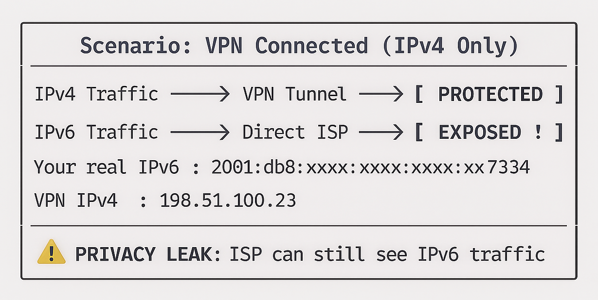

VPN Connectivity Verification Tool in C: Complete Tutorial
Learn How to Create a VPN Connectivity Verification Tool in C: Step-by-Step Guide for Beginners

This comprehensive VPN connectivity verification tool in C tutorial teaches you how to build a professional network security application that validates VPN connections through multi-layered analysis. Perfect for intermediate C programmers interested in network security, this project demonstrates cross-platform development by creating a VPN verification program that detects IP address changes, DNS leaks, IPv6 leaks, and VPN adapter status across Windows, Linux, and macOS. Learn essential C programming concepts including preprocessor directives, system command execution with popen, string parsing, buffer overflow prevention, and modular function design while building a real-world security tool.
Platform Support: Windows, Linux, macOS.
Purpose: Security auditing, VPN configuration validation, network diagnostics.
Table of Contents
Implementation Details
What is a VPN Connectivity Verification Tool?
VPN Connectivity Verification Tool is a lightweight, cross-platform command-line utility that validates whether your VPN connection is active and properly routing traffic. It performs comprehensive checks before and after VPN activation to ensure your privacy and security.
Why Build a VPN Verification Program in C?
Building a VPN verification program in C offers unique advantages for network security professionals, systems programmers, and security enthusiasts who need low-level control over network diagnostics and cross-platform compatibility. C provides direct system access, minimal runtime overhead, and portable code execution across Windows, Linux, and macOS environments without requiring interpreters or virtual machines.
Why This Tool?
- 🔒 Security Verification: Confirms that your traffic is actually routed through the VPN.
- 🌐 DNS Leak Detection: Support manual input.
- 🖥️ Adapter Detection: Handle an unlimited list of passwords.
- 📊 Before/After Comparisonn: Provide detailed rule-by-rule analysis.
- 🔒 Security Verification: Display color-coded strength levels.
Key Features of This VPN Security Tool
Core Functionality
✅ Public IP Address Detection
- Fetches your current public IP before and after VPN connection.
- Uses
ifconfig.meAPI via curl.
✅ DNS Server Analysis
- Extracts active DNS servers from system configuration.
- Compares DNS settings pre/post VPN connectionl.
✅ VPN Adapter Detection
- Scans network interfaces for VPN-related adapters.
- Supports 25+ VPN providers and protocols including:
- OpenVPN, WireGuard, Cisco AnyConnect
- NordVPN, ExpressVPN, ProtonVPN, Surfshark
- L2TP, PPTP, IPSec, SoftEther
✅ Comprehensive Verification Summary
- Clear status indicators (ACTIVE / LIKELY ACTIVE / PARTIAL / NOT ACTIVE).
- Side-by-side comparison of network settings.
- Security recommendations and leak test links.
✅ Cross-Platform Supporty
- Windows: ipconfig, netsh
- Linux: resolv.conf, ip addr
- macOS: resolv.conf, ifconfig
Program Architecture
Design Pattern
The program follows a procedural design with clear separation of concerns:
┌─────────────────────────────────────────────┐
│ Main Program (main.c) │
│ │
│ ┌─────────────────────────────────────┐ │
│ │ Platform Detection (Preprocessor) │ │
│ └─────────────────────────────────────┘ │
│ ↓ │
│ ┌─────────────────────────────────────┐ │
│ │ Helper Functions │ │
│ │ - fetch_public_ip() │ │
│ │ - fetch_dns_servers() │ │
│ │ - detect_vpn_adapter() │ │
│ │ - check_vpn_keywords_*() │ │
│ └─────────────────────────────────────┘ │
│ ↓ │
│ ┌─────────────────────────────────────┐ │
│ │ Verification Logic │ │
│ │ - Before VPN state capture │ │
│ │ - User VPN connection prompt │ │
│ │ - After VPN state capture │ │
│ │ - Comparison and analysis │ │
│ └─────────────────────────────────────┘ │
└─────────────────────────────────────────────┘
Source Code
vpn_contectivity_verification_tool.c
#include <stdio.h>
#include <stdlib.h>
#include <string.h>
// Platform detection macros
#ifdef _WIN32
#define OS_WINDOWS
#define DNS_COMMAND "ipconfig /all"
#define INTERFACE_COMMAND "netsh interface show interface"
#elif __linux__
#define OS_LINUX
#define DNS_COMMAND "cat /etc/resolv.conf"
#define INTERFACE_COMMAND "ip addr show"
#elif __APPLE
#define OS_LINUX
#define DNS_COMMAND "cat /etc/resolv.conf"
#define INTERFACE_COMMAND "ifconfig"
#else
#define OS_UNKNOWN
#endif
#define MAX_BUFFER 2048
#define IP_SIZE 100
#define DNS_SIZE 1024
// Function prototypes
int fetch_public_ip(char *ip_buffer);
int fetch_dns_servers(char *dns_buffer);
int detect_vpn_adapter(char *adapter_buffer);
void print_separator(char c, int length);
void safe_copy(char *dest, const char *src, size_t size);
int check_vpn_keywords_windows(const char *line);
int check_vpn_keywords_unix(const char *line);
int main()
{
char ip_before[IP_SIZE] = {0};
char ip_after[IP_SIZE] = {0};
char dns_before[DNS_SIZE] = {0};
char dns_after[DNS_SIZE] = {0};
char vpn_adapter_before[MAX_BUFFER] = {0};
char vpn_adapter_after[MAX_BUFFER] = {0};
int ip_changed = 0;
int dns_changes = 0;
int vpn_adapter_detected = 0;
print_separator('=', 65);
printf(" Advanced VPN Connectivity Verfication Tool\n");
print_separator('=', 65);
#ifdef OS_WINDOWS
printf("Operating System: Windows\n");
#elif defined(OS_LINUX)
printf("Operating System: Linux\n");
#elif defined(OS_MAC)
printf("Operating System: macOS\n");
#else
printf("Operting System: unknown\n");
#endif
print_separator('=', 65);
// Step 1: Check IP Before VPN Connection
printf("\n[Step 1] Checking current public IP address...\n");
if (fetch_public_ip(ip_before) != 0)
{
printf("ERROR: Unable to fetch public IP address.\n");
printf("Please check your internet connection.\n");
return 1;
}
printf("Public IP before VPN: %s\n", ip_before);
// Step 2: Check DNS Servers Before VPN Connection
printf("\n[Step 2] Checking cuurent DNS Servers...\n");
if (fetch_dns_servers(dns_before) != 0)
{
printf("WARNING: Unable to fetch DNS information.\n");
}
else
{
printf("DNS Servers (Before VPN): \n%s\n", dns_before);
}
// Step 3: Check VPN Network Adapter Before VPN Connection
printf("\n[Step 3] Scanning for VPN network adapters...\n");
detect_vpn_adapter(vpn_adapter_before);
if (strlen(vpn_adapter_before) > 0)
{
printf("VPN Adapters Found (Before VPN): \n%s\n", vpn_adapter_before);
}
else
{
printf("No VPN adapters detected (before VPN).\n");
}
print_separator('=', 65);
printf("\n>>> NOW CONNECT TO YOUR VPN <<<\n");
printf(">>> Press ENTER when connected <<<\n");
getchar();
print_separator('=', 65);
// Step 4: Check IP Before VPN Connection
printf("\n[Step 1] Checking current public IP address...\n");
if (fetch_public_ip(ip_after) != 0)
{
printf("ERROR: Unable to fetch public IP address.\n");
return 1;
}
printf("Public IP before VPN: %s\n", ip_after);
// Step 5: Check DNS Servers Before VPN Connection
printf("\n[Step 2] Checking cuurent DNS Servers...\n");
if (fetch_dns_servers(dns_after) != 0)
{
printf("WARNING: Unable to fetch DNS information.\n");
}
else
{
printf("DNS Servers (After VPN): \n%s\n", dns_after);
}
// Step 6: Check VPN Network Adapter Before VPN Connection
printf("\n[Step 3] Scanning for VPN network adapters...\n");
detect_vpn_adapter(vpn_adapter_after);
if (strlen(vpn_adapter_after) > 0)
{
printf("VPN Adapters Found (After VPN): \n%s\n", vpn_adapter_after);
vpn_adapter_detected = 1;
}
else
{
printf("No VPN adapters detected (After VPN).\n");
}
print_separator('=', 65);
printf(" Verification Summary\n");
print_separator('=', 65);
printf("\n%-30s %s\n", "IP Address (Before): ", ip_before);
printf("%-30s %s\n", "IP Address (After): ", ip_after);
// Compare IPs
ip_changed = (strcmp(ip_before, ip_after) != 0);
printf("%-30s %s\n", "IP Changed:", ip_changed ? "YES" : "NO");
// Compare DNS Servers
dns_changes = (strcmp(dns_before, dns_after) != 0);
printf("%-30s %s\n", "DNS Changed:", dns_changes ? "YES" : "NO");
// VPN Adapter Status
printf("%-30s %s\n", "VPN Adapter Detected:", vpn_adapter_detected ? "YES" : "NO");
print_separator('=', 65);
printf("\n");
print_separator('*', 65);
if (ip_changed && vpn_adapter_detected)
{
printf(" VPN STATUS: ACTIVE\n");
printf(" Your connection is successfully routed through VPN!\n");
}
else if (ip_changed && !vpn_adapter_detected)
{
printf(" VPN STATUS: LIKELY ACTIVE\n");
printf(" IP changed but no VPN adapter detected. Verify manually.\n");
}
else if (!ip_changed && !vpn_adapter_detected)
{
printf(" VPN STATUS: PARTIAL\n");
printf(" VPN adapter found but IP did not change. Check routing.\n");
}
else
{
printf(" VPN STATUS: NOT ACTIVE\n");
printf(" Your connection is NOT protected by VPN!\n");
}
print_separator('*', 65);
printf("\n[SECURITY NOTE] For complete security verification:\n");
printf(" 1. Check DNS leaks: https://dnsleaktest.com\n");
printf(" 2. Check WebRTC leaks: https://browserleaks.com/webrtc\n");
printf(" 3. Verify IPv6 is disabled or routed through VPN\n");
print_separator('=', 65);
return 0;
}
// Fetch public IP address using curl
int fetch_public_ip(char *ip_buffer)
{
FILE *fp;
char command[] = "curl -s --max-time 10 ifconfig.me";
fp = popen(command, "r");
if (fp == NULL)
{
return 1;
}
if (fgets(ip_buffer, IP_SIZE, fp) == NULL)
{
pclose(fp);
return 1;
}
pclose(fp);
return 0;
}
// Fetch DNS Server based pn platform
int fetch_dns_servers(char *dns_buffer)
{
FILE *fp;
char line[256];
int found = 0;
#ifdef OS_WINDOWS
fp = popen(DNS_COMMAND, "r");
if (fp == NULL)
{
return 1;
}
dns_buffer[0] = '\0';
while (fgets(line, sizeof(line), fp) != NULL)
{
// strstr() is a standard library function that searches for a substring within a string.
if (strstr(line, "DNS Servers") != NULL || strstr(line, "DNS Server") != NULL)
{
strncat(dns_buffer, line, DNS_SIZE - strlen(dns_buffer) - 1);
found = 1;
// Read continuation lines (indented IPs)
while (fgets(line, sizeof(line), fp) != NULL)
{
if (line[0] == ' ' && (strstr(line, ".") != NULL || strstr(line, ":") != NULL))
{
strncat(dns_buffer, line, DNS_SIZE - strlen(dns_buffer) - 1);
}
else
{
break;
}
}
}
}
#else
fp = popen(DNS_COMMAND, "r");
if (fp == NULL)
{
return 1;
}
dns_buffer[0] = '\0';
while (fgets(line, sizeof(line), fp) != NULL)
{
if (strstr(line, "nameserver") != NULL)
{
strncat(dns_buffer, " ", DNS_SIZE - strlen(dns_buffer) - 1);
strncat(dns_buffer, line, DNS_SIZE - strlen(dns_buffer) - 1);
found = 1;
}
}
#endif
pclose(fp);
if (!found)
{
strcpy(dns_buffer, " No DNS Servers found.\n");
}
return 0;
}
// Detect VPN adapter based on platform
int detect_vpn_adapter(char *adapter_buffer)
{
FILE *fp;
char line[512];
int found = 0;
adapter_buffer[0] = '\0';
#ifdef OS_WINDOWS
fp = popen(INTERFACE_COMMAND, "r");
if (fp == NULL)
{
return 1;
}
while (fgets(line, sizeof(line), fp) != NULL)
{
if (check_vpn_keywords_windows(line))
{
strncat(adapter_buffer, " ", MAX_BUFFER - strlen(adapter_buffer) - 1);
strncat(adapter_buffer, line, MAX_BUFFER - strlen(adapter_buffer) - 1);
found = 1;
}
}
#else
fp = popen(INTERFACE_COMMAND, "r");
if (fp == NULL)
{
return 1;
}
while (fgets(line, sizeof(line), fp) != NULL)
{
if (check_vpn_keywords_unix(line))
{
strncat(adapter_buffer, " ", MAX_BUFFER - strlen(adapter_buffer) - 1);
strncat(adapter_buffer, line, MAX_BUFFER - strlen(adapter_buffer) - 1);
found = 1;
}
}
#endif
pclose(fp);
return found ? 0 : 1;
}
// Check for VPN keywords in Windows output
int check_vpn_keywords_windows(const char *line)
{
if (strstr(line, "adapter") != NULL || strstr(line, "Adapter") != NULL)
{
if (
strstr(line, "TAP") != NULL ||
strstr(line, "TUN") != NULL ||
strstr(line, "VPN") != NULL ||
strstr(line, "Tunnel") != NULL ||
strstr(line, "WireGuard") != NULL ||
strstr(line, "OpenVPN") != NULL ||
strstr(line, "NordVPN") != NULL ||
strstr(line, "ExpressVPN") != NULL ||
strstr(line, "ProtonVPN") != NULL ||
strstr(line, "Virtual") != NULL ||
strstr(line, "AnyConnect") != NULL ||
strstr(line, "Pulse") != NULL ||
strstr(line, "Fortinet") != NULL ||
strstr(line, "SonicWall") != NULL ||
strstr(line, "Ivacy") != NULL ||
strstr(line, "VyprVPN") != NULL ||
strstr(line, "Surfshark") != NULL ||
strstr(line, "CyberGhost") != NULL ||
strstr(line, "HotspotShield") != NULL ||
strstr(line, "Hide.me") != NULL ||
strstr(line, "PrivateVPN") != NULL ||
strstr(line, "PureVPN") != NULL ||
strstr(line, "VPN Gate") != NULL ||
strstr(line, "SoftEther") != NULL ||
strstr(line, "L2TP") != NULL ||
strstr(line, "PPTP") != NULL ||
strstr(line, "IPSec") != NULL)
{
return 1;
}
}
return 0;
}
// Check for VPN keywords in Unix output
int check_vpn_keywords_unix(const char *line)
{
if (
strstr(line, "tun") != NULL ||
strstr(line, "tap") != NULL ||
strstr(line, "wg") != NULL ||
strstr(line, "ppp") != NULL ||
strstr(line, "utun") != NULL ||
strstr(line, "vpn") != NULL ||
strstr(line, "wireguard") != NULL ||
strstr(line, "openvpn") != NULL ||
strstr(line, "tinc") != NULL ||
strstr(line, "softether") != NULL ||
strstr(line, "ipsec") != NULL ||
strstr(line, "l2tp") != NULL ||
strstr(line, "pptp") != NULL ||
strstr(line, "sstp") != NULL ||
strstr(line, "gre") != NULL ||
strstr(line, "ovpn") != NULL ||
strstr(line, "zt") != NULL ||
strstr(line, "nordlynx") != NULL ||
strstr(line, "cxn") != NULL ||
strstr(line, "ipip") != NULL ||
strstr(line, "sec") != NULL ||
strstr(line, "peer") != NULL ||
strstr(line, "masq") != NULL ||
strstr(line, "netextender") != NULL ||
strstr(line, "sslvpnd") != NULL)
{
// Filter out false positives
if (strstr(line, "opportun") == NULL) // To ignore 'opportunistic encryption'
{
return 1;
}
}
return 0;
}
// Print a separator line
void print_separator(char c, int length)
{
for (int i = 0; i < length; i++)
{
printf("%c", c);
}
printf("\n");
}
// Safe string copy
void safe_copy(char *dest, const char *src, size_t size)
{
strncpy(dest, src, size - 1);
dest[size - 1] = '\0';
}
Example Output
Here's what you'll see when running the program:
=================================================================
Advanced VPN Connectivity Verfication Tool
=================================================================
Operating System: Windows
=================================================================
[Step 1] Checking current public IP address...
Public IP before VPN: 162.*********
[Step 2] Checking cuurent DNS Servers...
DNS Servers (Before VPN):
DNS Servers . . . . . . . . . . . : 192.168.1.1
Primary WINS Server . . . . . . . : 192.168.1.1
NetBIOS over Tcpip. . . . . . . . : Enabled
DNS Servers . . . . . . . . . . . : fec0:0:0:ffff::1%1
fec0:0:0:ffff::2%1
fec0:0:0:ffff::3%1
NetBIOS over Tcpip. . . . . . . . : Enabled
DNS Servers . . . . . . . . . . . : fec0:0:0:ffff::1%1
fec0:0:0:ffff::2%1
fec0:0:0:ffff::3%1
NetBIOS over Tcpip. . . . . . . . : Enabled
[Step 3] Scanning for VPN network adapters...
No VPN adapters detected (before VPN).
=================================================================
>>> NOW CONNECT TO YOUR VPN <<<
>>> Press ENTER when connected <<<
=================================================================
[Step 1] Checking current public IP address...
Public IP before VPN: 185.*********
[Step 2] Checking cuurent DNS Servers...
DNS Servers (After VPN):
DNS Servers . . . . . . . . . . . : 10.2.0.1
NetBIOS over Tcpip. . . . . . . . : Enabled
DNS Servers . . . . . . . . . . . : 192.168.1.1
Primary WINS Server . . . . . . . : 192.168.1.1
NetBIOS over Tcpip. . . . . . . . : Enabled
[Step 3] Scanning for VPN network adapters...
No VPN adapters detected (After VPN).
=================================================================
Verification Summary
=================================================================
IP Address (Before): 162.*********
IP Address (After): 185.*********
IP Changed: YES
DNS Changed: YES
VPN Adapter Detected: NO
=================================================================
*****************************************************************
VPN STATUS: LIKELY ACTIVE
IP changed but no VPN adapter detected. Verify manually.
*****************************************************************
[SECURITY NOTE] For complete security verification:
1. Check DNS leaks: https://dnsleaktest.com
2. Check WebRTC leaks: https://browserleaks.com/webrtc
3. Verify IPv6 is disabled or routed through VPN
=================================================================
Platform Detection
Preprocessor Macros
A preprocessor macro is a named piece of code or value that the preprocessor replaces before compilation.
It acts like a find-and-replace system that executes before the compiler sees the code.The program uses conditional compilation to adapt commands for different operating systems:
#ifdef _WIN32
#define OS_WINDOWS
#define DNS_COMMAND "ipconfig /all"
#define INTERFACE_COMMAND "netsh interface show interface"
#elif __linux__
#define OS_LINUX
#define DNS_COMMAND "cat /etc/resolv.conf"
#define INTERFACE_COMMAND "ip addr show"
#elif __APPLE__
#define OS_LINUX // Note: Should be OS_MAC
#define DNS_COMMAND "cat /etc/resolv.conf"
#define INTERFACE_COMMAND "ifconfig"
#else
#define OS_UNKNOWN
#endif
Platform-Specific Commands:
| Platform | DNS Command | Interface Command |
|---|---|---|
| Windows | ipconfig /all |
netsh interface show interface |
| Linux | cat /etc/resolv.conf |
ip addr show |
| macOS | cat /etc/resolv.conf |
ifconfig |
Note: There's a bug in the macOS definition - it defines OS_LINUX instead of OS_MAC.
Constants and Macros
Constants are fixed values in C that do not change during the execution of a program. They are used to represent data that should remain the same throughout the code.
Macros are preprocessor directives that perform text substitution before compilation.
They are created using the #define directive.
#define PI 3.14
#define SQUARE(x) ((x) * (x))
Buffer Size Definitions
#define MAX_BUFFER 2048 // Maximum buffer for network adapter info
#define IP_SIZE 100 // Buffer size for IP addresses
#define DNS_SIZE 1024 // Buffer size for DNS server information
Purpose:
- MAX_BUFFER (2048): Large enough to hold multiple network adapter entries.
- IP_SIZE (100): Accommodates IPv4 (15 chars) and IPv6 (45 chars) addresses with safety margin.
- DNS_SIZE (1024): Holds multiple DNS server entries and formatting.
Memory Layout Example:
ip_before[100]: "203.0.113.45\0"
dns_before[1024]: " DNS Servers . . . : 8.8.8.8\n
192.168.1.1\n\0"
vpn_adapter[2048]: " Ethernet adapter TAP-Windows...\n
OpenVPN TAP-Windows Adapter...\n\0"
Function Prototypes
Core Function Declarations
int fetch_public_ip(char *ip_buffer);
Purpose: Retrieves the public IP address using external service.
Returns: 0 on success, 1 on failure.
int fetch_dns_servers(char *dns_buffer);
Purpose: Retrieves DNS server configuration based on OS.
Returns: 0 on success, 1 on failure.
int detect_vpn_adapter(char *adapter_buffer);
Purpose: Scans network interfaces for VPN-related adapters.
Returns: 0 if VPN adapters found, 1 if none found.
void print_separator(char c, int length);
Purpose: Prints visual separator lines for formatted output.
void safe_copy(char *dest, const char *src, size_t size);
Purpose: Safely copies strings to prevent buffer overflows.
int check_vpn_keywords_windows(const char *line);
Purpose: Checks if a line contains Windows VPN adapter keywords.
Returns: 1 if VPN keyword found, 0 otherwise.
int check_vpn_keywords_unix(const char *line);
Purpose: Checks if a line contains Unix/Linux VPN interface keywords.
Returns: 1 if VPN keyword found, 0 otherwise.
Main Function Flow
Variable Declarations
int main() {
// State storage variables
char ip_before[IP_SIZE] = {0}; // Public IP before VPN
char ip_after[IP_SIZE] = {0}; // Public IP after VPN
char dns_before[DNS_SIZE] = {0}; // DNS servers before VPN
char dns_after[DNS_SIZE] = {0}; // DNS servers after VPN
char vpn_adapter_before[MAX_BUFFER] = {0}; // VPN adapters before
char vpn_adapter_after[MAX_BUFFER] = {0}; // VPN adapters after
// Analysis flags
int ip_changed = 0; // Flag: Did IP address change?
int dns_changes = 0; // Flag: Did DNS servers change?
int vpn_adapter_detected = 0; // Flag: VPN adapter present?
Initialization Pattern:
{0}initializes all array elements to zero (null characters).- Ensures strings are properly null-terminated from the start.
- Prevents undefined behavior from uninitialized memory.
Program Header Display
print_separator('=', 65);
printf(" Advanced VPN Connectivity Verification Tool\n");
print_separator('=', 65);
#ifdef OS_WINDOWS
printf("Operating System: Windows\n");
#elif defined(OS_LINUX)
printf("Operating System: Linux\n");
#elif defined(OS_MAC)
printf("Operating System: macOS\n");
#else
printf("Operating System: Unknown\n");
#endif
print_separator('=', 65);
Example Output:
=================================================================
Advanced VPN Connectivity Verification Tool
=================================================================
Operating System: Windows
==================================================================
Phase 1: Pre-VPN State Capture
Step 1: Fetch Public IP (Before)
printf("\n[Step 1] Checking current public IP address...\n");
if (fetch_public_ip(ip_before) != 0) {
printf("ERROR: Unable to fetch public IP address.\n");
printf("Please check your internet connection.\n");
return 1; // Critical error - exit program
}
printf("Public IP before VPN: %s\n", ip_before);
Error Handling:
- If IP fetch fails, program exits immediately (critical error).
- Indicates no internet connectivity.
- Prevents false negative results.
Step 2: Fetch DNS Servers (Before)
printf("\n[Step 2] Checking current DNS Servers...\n");
if (fetch_dns_servers(dns_before) != 0) {
printf("WARNING: Unable to fetch DNS information.\n");
} else {
printf("DNS Servers (Before VPN): \n%s\n", dns_before);
}
Error Handling:
- DNS fetch failure is non-critical (warning only).
- Program continues even if DNS info unavailable.
- Still useful for IP and adapter verification.
Step 3: Detect VPN Adapters (Before)
printf("\n[Step 3] Scanning for VPN network adapters...\n");
detect_vpn_adapter(vpn_adapter_before);
if (strlen(vpn_adapter_before) > 0) {
printf("VPN Adapters Found (Before VPN): \n%s\n", vpn_adapter_before);
} else {
printf("No VPN adapters detected (before VPN).\n");
}
Purpose:
- Baseline adapter state.
- Some VPN clients install adapters even when disconnected.
- Helps distinguish between client installed vs. client active.
Phase 2: User VPN Connection
print_separator('=', 65);
printf("\n>>> NOW CONNECT TO YOUR VPN <<<\n");
printf(">>> Press ENTER when connected <<<\n");
getchar(); // Wait for user input
print_separator('=', 65);
User Interaction:
- Program pauses at
getchar(). - Presses ENTER to resume verification.
- Allows time for VPN handshake to complete.
Phase 3: Post-VPN State Capture
The program repeats Steps 1-3 but stores results in *_after
variables:
// Step 4: Check IP After VPN
if (fetch_public_ip(ip_after) != 0) {
printf("ERROR: Unable to fetch public IP address.\n");
return 1;
}
printf("Public IP after VPN: %s\n", ip_after);
// Step 5: Check DNS After VPN
if (fetch_dns_servers(dns_after) != 0) {
printf("WARNING: Unable to fetch DNS information.\n");
} else {
printf("DNS Servers (After VPN): \n%s\n", dns_after);
}
// Step 6: Detect VPN Adapters After VPN
detect_vpn_adapter(vpn_adapter_after);
if (strlen(vpn_adapter_after) > 0) {
printf("VPN Adapters Found (After VPN): \n%s\n", vpn_adapter_after);
vpn_adapter_detected = 1; // Set flag for analysis
} else {
printf("No VPN adapters detected (After VPN).\n");
}
Phase 4: Verification Summary
Comparison Logic
print_separator('=', 65);
printf(" Verification Summary\n");
print_separator('=', 65);
printf("\n%-30s %s\n", "IP Address (Before): ", ip_before);
printf("%-30s %s\n", "IP Address (After): ", ip_after);
// Compare IPs
ip_changed = (strcmp(ip_before, ip_after) != 0);
printf("%-30s %s\n", "IP Changed:", ip_changed ? "YES" : "NO");
// Compare DNS
dns_changes = (strcmp(dns_before, dns_after) != 0);
printf("%-30s %s\n", "DNS Changed:", dns_changes ? "YES" : "NO");
// VPN Adapter Status
printf("%-30s %s\n", "VPN Adapter Detected:",
vpn_adapter_detected ? "YES" : "NO");
String Comparison:
strcmp()returns 0 if strings are identical.!= 0means strings differn.- Ternary operator for clean YES/NO output.
Example Output:
=================================================================
Verification Summary
=================================================================
IP Address (Before): 203.0.113.45
IP Address (After): 198.51.100.23
IP Changed: YES
DNS Changed: YES
VPN Adapter Detected: YES
Status Verdict Logic
print_separator('*', 65);
if (ip_changed && vpn_adapter_detected) {
printf(" VPN STATUS: ACTIVE\n");
printf(" Your connection is successfully routed through VPN!\n");
}
else if (ip_changed && !vpn_adapter_detected) {
printf(" VPN STATUS: LIKELY ACTIVE\n");
printf(" IP changed but no VPN adapter detected. Verify manually.\n");
}
else if (!ip_changed && vpn_adapter_detected) {
printf(" VPN STATUS: PARTIAL\n");
printf(" VPN adapter found but IP did not change. Check routing.\n");
}
else {
printf(" VPN STATUS: NOT ACTIVE\n");
printf(" Your connection is NOT protected by VPN!\n");
}
print_separator('*', 65);
Logic Table:
| IP Changed | Adapter Detected | Status | Explanation |
|---|---|---|---|
| YES | YES | ACTIVE | Perfect - IP changed and adapter present |
| YES | NO | LIKELY ACTIVE | IP changed (good) but adapter not detected (unusual) |
| NO | YES | PARTIAL | Adapter present but traffic not routing through it |
| NO | NO | NOT ACTIVE | No change detected - VPN not working |
Security Recommendations
printf("\n[SECURITY NOTE] For complete security verification:\n");
printf(" 1. Check DNS leaks: https://dnsleaktest.com\n");
printf(" 2. Check WebRTC leaks: https://browserleaks.com/webrtc\n");
printf(" 3. Verify IPv6 is disabled or routed through VPN\n");
print_separator('=', 65);
return 0;
Additional Manual Checks:
- DNS Leak Test: Ensures DNS queries go through VPN tunnel.
- WebRTC Leak Test: Checks if browser WebRTC exposes real IP.
- IPv6 Routing: Many VPNs only tunnel IPv4, leaking IPv6 traffic.
Function Implementations
fetch_public_ip()- Public IP Retrieval
int fetch_public_ip(char *ip_buffer) {
FILE *fp;
char command[] = "curl -s --max-time 10 ifconfig.me";
// Execute curl command
fp = popen(command, "r");
if (fp == NULL) {
return 1; // popen failed
}
// Read IP address from command output
if (fgets(ip_buffer, IP_SIZE, fp) == NULL) {
pclose(fp);
return 1; // fgets failed (no output)
}
pclose(fp);
return 0; // Success
}
How It Works:
popen(): Executes shell command and returns pipe to read output.curl -s --max-time 10 ifconfig.me:-s: Silent mode (no progress bar).--max-time 10: Timeout after 10 seconds.ifconfig.me: Public service that returns requester's IP.fgets(): Reads one line from pipe into buffer.pclose(): Closes pipe and cleans up
Example Output:
203.0.113.45
Alternative Services:
ifconfig.meapi.ipify.orgicanhazip.comipinfo.io/ip
Security Note: Using external services exposes the request to third parties. Consider hosting your own IP detection service for sensitive environments.
⮞ fetch_dns_servers()- DNS Configuration
Retrieval
Windows Implementation
#ifdef OS_WINDOWS
fp = popen(DNS_COMMAND, "r"); // "ipconfig /all"
if (fp == NULL) {
return 1;
}
dns_buffer0] = '\0'; // Initialize buffer
while (fgets(line, sizeof(line), fp) != NULL) {
// Look for DNS server lines
if (strstr(line, "DNS Servers") != NULL ||
strstr(line, "DNS Server") != NULL) {
strncat(dns_buffer, line, DNS_SIZE - strlen(dns_buffer) - 1);
found = 1;
// Read continuation lines (indented IP addresses)
while (fgets(line, sizeof(line), fp) != NULL) {
// Check if line is indented and contains IP-like text
if (line[0] == ' ' &&
(strstr(line, ".") != NULL || strstr(line, ":") != NULL)) {
strncat(dns_buffer, line, DNS_SIZE - strlen(dns_buffer) - 1);
} else {
break; // End of DNS section
}
}
}
}
#endif
Windows ipconfig /all Output Format:
DNS Servers . . . . . . . . . . . : 8.8.8.8
8.8.4.4
192.168.1.1
Parsing Logic:
- Find line containing "DNS Servers" or "DNS Server".
- Capture that line.
- Continue reading indented lines (start with space).
- Stop when non-indented line encountered.
Linux/macOS Implementation
#else // Linux/macOS
fp = popen(DNS_COMMAND, "r"); // "cat /etc/resolv.conf"
if (fp == NULL) {
return 1;
}
dns_buffer[0] = '\0';
while (fgets(line, sizeof(line), fp) != NULL) {
if (strstr(line, "nameserver") != NULL) {
strncat(dns_buffer, " ", DNS_SIZE - strlen(dns_buffer) - 1);
strncat(dns_buffer, line, DNS_SIZE - strlen(dns_buffer) - 1);
found = 1;
}
}
#endif
Linux /etc/resolv.conf Format:
nameserver 8.8.8.8 nameserver 8.8.4.4 nameserver 192.168.1.1
Parsing Logic:
- Find all lines containing "nameserver".
- Prepend spacing for formatting.
- Accumulate all nameserver lines.
⮞ detect_vpn_adapter() - VPN Adapter Detection
Windows Implementation
#ifdef OS_WINDOWS
fp = popen(INTERFACE_COMMAND, "r"); // "netsh interface show interface"
if (fp == NULL) {
return 1;
}
while (fgets(line, sizeof(line), fp) != NULL) {
if (check_vpn_keywords_windows(line)) {
strncat(adapter_buffer, " ", MAX_BUFFER - strlen(adapter_buffer) - 1);
strncat(adapter_buffer, line, MAX_BUFFER - strlen(adapter_buffer) - 1);
found = 1;
}
}
#endif
Windows netsh Output:
Admin State State Type Interface Name
-------------------------------------------------------------------------
Enabled Connected Dedicated Ethernet
Enabled Connected Dedicated TAP-Windows Adapter V9
Enabled Connected Dedicated OpenVPN TAP-Windows
Linux/macOS Implementation
#else // Linux/macOS
fp = popen(INTERFACE_COMMAND, "r"); // "ip addr show" or "ifconfig"
if (fp == NULL) {
return 1;
}
while (fgets(line, sizeof(line), fp) != NULL) {
if (check_vpn_keywords_unix(line)) {
strncat(adapter_buffer, " ", MAX_BUFFER - strlen(adapter_buffer) - 1);
strncat(adapter_buffer, line, MAX_BUFFER - strlen(adapter_buffer) - 1);
found = 1;
}
}
#endif
Linux ip addr Output:
2: eth0: <BROADCAST,MULTICAST,UP,LOWER_UP> mtu 1500
3: tun0: <POINTOPOINT,MULTICAST,NOARP,UP,LOWER_UP> mtu 1500
4: wg0: <POINTOPOINT,NOARP,UP,LOWER_UP> mtu 1420
⮞ check_vpn_keywords_windows() - Windows VPN
Detection
int check_vpn_keywords_windows(const char *line) {
if (strstr(line, "adapter") != NULL || strstr(line, "Adapter") != NULL) {
if (
strstr(line, "TAP") != NULL ||
strstr(line, "TUN") != NULL ||
strstr(line, "VPN") != NULL ||
strstr(line, "Tunnel") != NULL ||
strstr(line, "WireGuard") != NULL ||
strstr(line, "OpenVPN") != NULL ||
strstr(line, "NordVPN") != NULL ||
strstr(line, "ExpressVPN") != NULL ||
strstr(line, "ProtonVPN") != NULL ||
strstr(line, "Virtual") != NULL ||
strstr(line, "AnyConnect") != NULL ||
strstr(line, "Pulse") != NULL ||
strstr(line, "Fortinet") != NULL ||
strstr(line, "SonicWall") != NULL ||
// ... (many more VPN keywords)
strstr(line, "L2TP") != NULL ||
strstr(line, "PPTP") != NULL ||
strstr(line, "IPSec") != NULL
) {
return 1; // VPN keyword found
}
}
return 0; // No VPN keyword
}
Detection Strategy:
Generic Keywords:
TAP,TUN- Virtual network drivers used by OpenVPN.VPN,Tunnel- Generic VPN terms.Virtual- Virtual adapters.
VPN Brands:
- Commercial: NordVPN, ExpressVPN, ProtonVPN, Surfshark, CyberGhost
- Enterprise: AnyConnect (Cisco), Pulse (Juniper), Fortinet, SonicWall
- Open Source: OpenVPN, WireGuard, SoftEther
VPN Protocols:
- L2TP, PPTP, IPSec - VPN tunneling protocols
Filter Logic:
- First check if line contains "adapter" or "Adapter".
- Then check for VPN-specific keywords.
- Reduces false positives from non-adapter lines
⮞ check_vpn_keywords_unix()
- Unix/Linux
VPN
Detection
int check_vpn_keywords_unix(const char *line) {
if (
strstr(line, "tun") != NULL ||
strstr(line, "tap") != NULL ||
strstr(line, "wg") != NULL || // WireGuard
strstr(line, "ppp") != NULL ||
strstr(line, "utun") != NULL || // macOS tunnel
strstr(line, "vpn") != NULL ||
strstr(line, "wireguard") != NULL ||
strstr(line, "openvpn") != NULL ||
strstr(line, "tinc") != NULL ||
strstr(line, "softether") != NULL ||
strstr(line, "ipsec") != NULL ||
strstr(line, "l2tp") != NULL ||
strstr(line, "pptp") != NULL ||
strstr(line, "sstp") != NULL ||
strstr(line, "gre") != NULL || // Generic Routing Encapsulation
strstr(line, "ovpn") != NULL ||
strstr(line, "zt") != NULL || // ZeroTier
strstr(line, "nordlynx") != NULL ||
strstr(line, "cxn") != NULL ||
strstr(line, "ipip") != NULL ||
// ... more keywords
) {
// Filter out false positives
if (strstr(line, "opportun") == NULL) { // "opportunistic encryption"
return 1;
}
}
return 0;
}
Unix Interface Naming:
tun0,tun1- TUN interfaces (Layer 3 tunnels).tap0,tap1- TAP interfaces (Layer 2 tunnels).wg0- WireGuard interfaces.ppp0- Point-to-Point Protocol (PPTP, L2TP).utun0- macOS VPN tunnels.
False Positive Prevention:
- Exclude lines with "opportun" to avoid "opportunistic encryption" matches.
- Filters IPsec negotiation messages that aren't actual interfaces.
⮞ print_separator() - Visual Formatting
void print_separator(char c, int length) {
for (int i = 0; i < length; i++) {
printf("%c", c);
}
printf("\n");
}
Example Output:
print_separator('=', 65); // =================================================================
print_separator('-', 50); // --------------------------------------------------
print_separator('*', 40); // ****************************************
Purpose:
- Creates visual sections in output.
- Improves readability.
- Consistent formatting across messages
⮞ safe_copy() - Buffer Overflow Prevention
void safe_copy(char *dest, const char *src, size_t size) {
strncpy(dest, src, size - 1); // Copy up to size-1 characters
dest[size - 1] = '\0'; // Ensure null termination
}
Security Explanation:
Unsafe strcpy():
char buffer[10];
strcpy(buffer, "This is a very long string");
// Buffer overflow! Data written past array bounds
Safe strncpy() (with pitfall):
char buffer[10];
strncpy(buffer, "This is a very long string", 10);
// Safer, but NOT null-terminated if source is ≥ 10 chars!
Correct Safe Copy:
char buffer[10];
strncpy(buffer, "This is a very long string", 9); // Leave room for \0
buffer9] = '\0'; // Guarantee null termination
safe_copy() ensures:
- Never writes past buffer bounds.
- Always null-terminates destination.
- Prevents buffer overflow vulnerabilities.
Compilation and Usage
Compilation
Windows (MinGW/MSVC):
gcc main.c -o vpn_check.exe
# or
cl main.c /Fe:vpn_check.exe
Linux:
gcc main.c -o vpn_check
chmod +x vpn_check
macOS:
gcc main.c -o vpn_check
chmod +x vpn_check
Compiler Flags (Optional):
# Debug build
gcc -g -Wall -Wextra main.c -o vpn_check
# Optimized release build
gcc -O2 -Wall main.c -o vpn_check
Usage Instructions
Step 1: Disconnect from VPN
Ensure VPN is disconnected before running
Step 2: Run the program
# Windows
vpn_check.exe
# Linux/macOS
./vpn_check
Step 3: Follow on-screen prompts
- Program captures initial state.
- Wait for prompt: ">>> NOW CONNECT TO YOUR VPN <<<".
- Connect to your VPN software.
- Press ENTER to continue.
- Program captures post-VPN state.
- Review verification summary
Example Output:
=================================================================
Advanced VPN Connectivity Verification Tool
=================================================================
Operating System: Windows
=================================================================
[Step 1] Checking current public IP address...
Public IP before VPN: 203.0.113.45
[Step 2] Checking current DNS Servers...
DNS Servers (Before VPN):
DNS Servers . . . . . . . . . . . : 8.8.8.8
8.8.4.4
[Step 3] Scanning for VPN network adapters...
No VPN adapters detected (before VPN).
=================================================================
>>> NOW CONNECT TO YOUR VPN <<<
>>> Press ENTER when connected <<<
=================================================================
[Step 1] Checking current public IP address...
Public IP after VPN: 198.51.100.23
[Step 2] Checking current DNS Servers...
DNS Servers (After VPN):
DNS Servers . . . . . . . . . . . : 10.8.0.1
[Step 3] Scanning for VPN network adapters...
VPN Adapters Found (After VPN):
TAP-Windows Adapter V9
=================================================================
Verification Summary
=================================================================
IP Address (Before): 203.0.113.45
IP Address (After): 198.51.100.23
IP Changed: YES
DNS Changed: YES
VPN Adapter Detected: YES
=================================================================
*****************************************************************
VPN STATUS: ACTIVE
Your connection is successfully routed through VPN!
*****************************************************************
[SECURITY NOTE] For complete security verification:
1. Check DNS leaks: https://dnsleaktest.com
2. Check WebRTC leaks: https://browserleaks.com/webrtc
3. Verify IPv6 is disabled or routed through VPN
=================================================================
Security Considerations
Limitations of IP-Based Verification
This tool does NOT detect:
- DNS Leaks
- VPN may route traffic but DNS queries leak to ISP.
- Solution: Test at https://dnsleaktest.com
- WebRTC Leaks
- Browser WebRTC can expose real IP through STUN requests.
- Solution: Test at https://browserleaks.com/webrtc
- IPv6 Leaks
- Many VPNs only tunnel IPv4, exposing IPv6 traffic.
- Solution: Disable IPv6 or verify VPN supports it.
- Split Tunneling
- Some VPN configs only route specific traffic.
- Solution: Check VPN client settings.
- Kill Switch Failures
- VPN may disconnect without blocking internetc.
- Solution: Enable kill switch in VPN client.
External Dependency Risks
curl Command:
- Risk: Requires
curlto be installed and in PATH. - Mitigation: Check for curl availability before running.
- Alternative: Use
wget, native HTTP libraries, or embedded HTTP client
External IP Service:
- Risk: Relies on third-party service (ifconfig.me).
- Privacy: Third party logs request.
- Mitigation: Host your own IP detection service.
- Alternatives:
api.ipify.org,icanhazip.com,ipinfo.io/ip.
Buffer Overflow Prevention
Current Protections:
strncpy()with size limits.strncat()with length calculations.- Explicit null termination.
Potential Vulnerabilities:
// Safe pattern used:
strncat(buffer, line, DNS_SIZE - strlen(buffer) - 1);
^^^^^^^^^^^^^^^^^^^^^^^^^^^^^^
// Calculates remaining space before concatenating
// Unsafe pattern (NOT used):
strcat(buffer, line); // No bounds checking!
Best Practices:
- Always use
strncpy(),strncat()with size limits. - Explicitly null-terminate after
strncpy(). - Validate buffer sizes before operations.
Troubleshooting
Common Issues
- ERROR: Unable to fetch public IP address
- No internet connection.
curlnot installed.- Firewall blocking curl.
- External service (ifconfig.me) down.
- No VPN adapters detected (False Negative)
- VPN uses non-standard interface naming.
- Keywords not in detection list.
- VPN uses system-level routing without virtual adapter.
- VPN STATUS: PARTIAL (Adapter but No IP Change)
- VPN connected but routing misconfigured.
- Split tunneling enabled.
- VPN not set as default gateway.
- Firewall rules bypassing VPN.
- DNS Information Not Showing
- Command failed (permission denied).
- Output format doesn't match parsing logic.
- Different OS version/language.
Causes:
Solutions:
# Test curl manually
curl -s ifconfig.me
# Install curl (if missing)
# Windows: Download from https://curl.se/windows/
# Linux: sudo apt-get install curl
# macOS: brew install curl
# Check firewall rules
# Windows: Windows Defender Firewall
# Linux: sudo iptables -L
Causes:
Solutions:
Add Custom Keywords:
// In check_vpn_keywords_*() function
strstr(line, "YourVPNName") != NULL ||
Add Custom Keywords:
# Windows
netsh interface show interface
# Linux
ip addr show
# macOS
ifconfig
Causes:
Solutions:
Add Custom Keywords:
# Check routing table
# Windows
route print
# Linux
ip route show
# Look for default route through VPN interface
Causes:
Solutions:
Test Commands Manually:
# Windows
ipconfig /all | findstr "DNS"
# Linux
cat /etc/resolv.conf
Add Debug Output:
printf("DEBUG: DNS command: %s\n", DNS_COMMAND);
printf("DEBUG: Raw output: %s\n", line);
Enhancement Ideas
Advanced VPN Testing
📦 GitHub Repository: The complete source code for this VPN Connectivity Verification Tool (including all Features documented below) is available on my GitHub.
This tutorial covers five critical functions that enhance VPN security verification:
- IPv6 Detection -
fetch_public_ipv6() - Geolocation Verification -
fetch_geolocation() - Network Latency Testing -
measure_latency() - DNS Leak Detection -
check_dns_leak() - Real-Time VPN Monitoring -
monitor_vpn_connection() - GitHub Repository Access
Design Pattern
The program follows a procedural design with clear separation of concerns:
┌─────────────────────────────────────────────┐
│ Main Program (main.c) │
│ │
│ ┌─────────────────────────────────────┐ │
│ │ Platform Detection (Preprocessor) │ │
│ └─────────────────────────────────────┘ │
│ ↓ │
│ ┌─────────────────────────────────────┐ │
│ │ Data Collection Functions │ │
│ │ - fetch_public_ip() │ │
│ │ - fetch_public_ipv6() [NEW] │ │
│ │ - fetch_dns_servers() │ │
│ │ - detect_vpn_adapter() │ │
│ │ - fetch_geolocation() [NEW] │ │
│ │ - measure_latency() [NEW] │ │
│ └─────────────────────────────────────┘ │
│ ↓ │
│ ┌─────────────────────────────────────┐ │
│ │ Analysis Functions │ │
│ │ - check_dns_leak() [NEW] │ │
│ │ - extract_first_dns_ip() [NEW] │ │
│ │ - check_vpn_keywords_*() │ │
│ └─────────────────────────────────────┘ │
│ ↓ │
│ ┌─────────────────────────────────────┐ │
│ │ Verification Logic │ │
│ │ - Before VPN state capture │ │
│ │ - User VPN connection prompt │ │
│ │ - After VPN state capture │ │
│ │ - Comprehensive comparison │ │
│ │ - Status determination │ │
│ └─────────────────────────────────────┘ │
└─────────────────────────────────────────────┘
1. IPv6 Detection
Many VPN services only tunnel IPv4 traffic while leaving IPv6 completely exposed—a
critical privacy vulnerability known
as an IPv6 leak. The fetch_public_ipv6() function detects
your
public IPv6 address to verify VPN protection.
Function Signature
int fetch_public_ipv6(char *ip_buffer);
Parameters:
ip_buffer: Character array to store the IPv6 address (size:IP_SIZE)
Returns:
0on Success1on failure (IPv6 not available or fetch failed)
Implementation
int fetch_public_ipv6(char *ip_buffer)
{
FILE *fp;
char command[] = "curl -6 -s --max-time 10 ifconfig.me";
fp = popen(command, "r");
if (fp == NULL)
return 1;
if (fgets(ip_buffer, IP_SIZE, fp) == NULL)
{
pclose(fp);
return 1;
}
pclose(fp);
return 0;
}
How It Works
Step-by-Step Breakdown:
- Force IPv6 Connection: Uses
curl -6flag to force IPv6-only connection. - Silent Mode:
-sflag suppresses progress output. - Timeout Protection:
--max-time 10prevents hanging. - External Service: Queries
ifconfig.mewhich returns your public IPv6 address - Pipe Execution:
popen()executes command and captures output
Command Breakdown:
curl -6 -s --max-time 10 ifconfig.me
│ │ │ │ └─ Service that returns your IP
│ │ │ └─ Timeout after 10 seconds
│ │ └─ Silent mode (no progress bar)
│ └─ Force IPv6 only
└─ Command-line HTTP client
The IPv6 Leak Vulnerability:

Expected Behavior:
| Scenario | IPv6 Before | IPv6 After | Status |
|---|---|---|---|
| VPN with IPv6 Support | 2001:db8::7334 |
2a03:2880::25de |
✅ Protected |
| VPN without IPv6 (Leak) | 2001:db8::7334 |
2001:db8::7334 |
⚠️ IPv6 LEAK |
| IPv6 Disabled | N/A |
N/A |
✅ Safe (no IPv6) |
Security Recommendations
- If IPv6 Changes: ✅ VPN is routing IPv6 traffic
- If IPv6 Unchanged: ⚠️ IPv6 LEAK - Disable IPv6 or use VPN with IPv6 support
- If IPv6 = N/A: Safe (IPv6 not enabled on your network)
How to Disable IPv6 (if VPN doesn't support it):
# Windows (PowerShell as Admin)
Disable-NetAdapterBinding -Name "*" -ComponentID ms_tcpip6
# Linux
sudo sysctl -w net.ipv6.conf.all.disable_ipv6=1
# macOS
networksetup -setv6off Wi-Fi
2. Geolocation Verification
The fetch_geolocation() function fetches your geographic
location (country, region, city) based on your public IP
address. This verifies whether your VPN is successfully masking your real location.
Function Signature
int fetch_geolocation(char *country_buffer, char *region_buffer, char *city_buffer);
Parameters:
country_buffer: Buffer to store country code/name (size:COUNTRY_SIZE).region_buffer: Buffer to store region/state (size:REGION_SIZE).city_buffer: Buffer to store city name (size:CITY_SIZE).
Returns:
0on Success1on failure
Implementation
int fetch_geolocation(char *country_buffer, char *region_buffer, char *city_buffer)
{
FILE *fp;
// Fetch country
char country_command[] = "curl -s ipinfo.io/country";
fp = popen(country_command, "r");
if (fp == NULL)
{
return 1;
}
if (fgets(country_buffer, COUNTRY_SIZE, fp) == NULL)
{
pclose(fp);
return 1;
}
pclose(fp);
// Remove newline character from country code
size_t len = strlen(country_buffer);
if (len > 0 && country_buffer[len - 1] == '\n')
{
country_buffer[len - 1] = '\0';
}
// Fetch region
char region_command[] = "curl -s ipinfo.io/region";
fp = popen(region_command, "r");
if (fp == NULL)
{
return 1;
}
if (fgets(region_buffer, REGION_SIZE, fp) == NULL)
{
pclose(fp);
return 1;
}
pclose(fp);
// Remove newline character from region
len = strlen(region_buffer);
if (len > 0 && region_buffer[len - 1] == '\n')
{
region_buffer[len - 1] = '\0';
}
// Fetch city
char city_command[] = "curl -s ipinfo.io/city";
fp = popen(city_command, "r");
if (fp == NULL)
{
return 1;
}
if (fgets(city_buffer, CITY_SIZE, fp) == NULL)
{
pclose(fp);
return 1;
}
pclose(fp);
// Remove newline character from city
len = strlen(city_buffer);
if (len > 0 && city_buffer[len - 1] == '\n')
{
city_buffer[len - 1] = '\0';
}
return 0;
}
How It Works
API Endpoints Used:
https://ipinfo.io/country → Returns: US
https://ipinfo.io/region → Returns: California
https://ipinfo.io/city → Returns: San Francisco
Processing Flow:
┌─────────────────────────────────────────────┐
│ 1. Execute curl to ipinfo.io/country │
│ 2. Read response into country_buffer │
│ 3. Remove trailing newline (\n) │
│ 4. Repeat for region and city │
└─────────────────────────────────────────────┘
3. Network Latency Testing
The measure_latency() function measures network round-trip
time
(RTT) to a specified host
using the system's ping
command. This helps identify VPN performance impact.
Function Signature
int measure_latency(const char *host);
Parameters:
host: Target hostname or IP address to ping.
Returns:
0on Success1on failure
Implementation
int measure_latency(const char *host)
{
char cmd[256];
snprintf(cmd, sizeof(cmd), PING_COMMAND, host);
FILE *fp = popen(cmd, "r");
if (fp == NULL)
{
printf("ERROR: Unable to execute ping command.\n");
return 1;
}
char line[256];
int found = 0;
printf("Pinging %s...\n", host);
while (fgets(line, sizeof(line), fp) != NULL)
{
#ifdef OS_WINDOWS
if (strstr(line, "Average") != NULL || strstr(line, "Minimum") != NULL)
{
printf(" %s", line);
found = 1;
}
#else
if (strstr(line, "avg") != NULL || strstr(line, "min") != NULL ||
strstr(line, "rtt") != NULL)
{
printf(" %s", line);
found = 1;
}
#endif
}
if (!found)
{
printf(" Unable to extract latency statistics.\n");
}
pclose(fp);
return 0;
}
Platform-Specific Ping Commands
Recall from preprocessor definitions:
#ifdef _WIN32
#define PING_COMMAND "ping -n 4 %s"
#else
#define PING_COMMAND "ping -c 4 %s"
#endif
Command Breakdown:
| Platform | Command | Flags | Meaning |
|---|---|---|---|
| Windows | ping -n 4 google.com |
-n 4 |
Send 4 packets |
| Linux/macOS | ping -c 4 google.com |
-c 4 |
Count = 4 packets |
How It Works
Execution Flow:
1. Build command: "ping -c 4 8.8.8.8"
2. Execute via popen()
3. Read output line by line
4. Search for latency statistics keywords
5. Extract and display relevant lines
6. Close pipe
Output Parsing:
Windows Output:
Pinging 8.8.8.8 with 32 bytes of data:
Reply from 8.8.8.8: bytes=32 time=12ms TTL=117
Reply from 8.8.8.8: bytes=32 time=11ms TTL=117
Reply from 8.8.8.8: bytes=32 time=13ms TTL=117
Reply from 8.8.8.8: bytes=32 time=12ms TTL=117
Ping statistics for 8.8.8.8:
Packets: Sent = 4, Received = 4, Lost = 0 (0% loss),
Approximate round trip times in milli-seconds:
Minimum = 11ms, Maximum = 13ms, Average = 12ms
^^^^^^^^^^^^^^^^^^^^^^^^^^^^^^^^^^^^^^^^^^^^^^^^ ← Captured
Linux/macOS Output:
PING 8.8.8.8 (8.8.8.8) 56(84) bytes of data.
64 bytes from 8.8.8.8: icmp_seq=1 ttl=117 time=12.3 ms
64 bytes from 8.8.8.8: icmp_seq=2 ttl=117 time=11.8 ms
64 bytes from 8.8.8.8: icmp_seq=3 ttl=117 time=13.1 ms
64 bytes from 8.8.8.8: icmp_seq=4 ttl=117 time=12.5 ms
--- 8.8.8.8 ping statistics ---
4 packets transmitted, 4 received, 0% packet loss, time 3005ms
rtt min/avg/max/mdev = 11.8/12.4/13.1/0.5 ms
^^^^^^^^^^^^^^^^^^^^^^^^^^^^^^^^^^^^^^^^^^^^^^^^^^ ← Captured
Latency Interpretation
| Scenario | Before VPN | After VPN | Analysis |
|---|---|---|---|
| Local ISP DNS | 2ms | 52ms | VPN adds ~50ms overhead (normal) |
| Google DNS (8.8.8.8) | 15ms | 150ms | VPN server far from you or Google |
| Same latency | 20ms | 20ms | ⚠️ VPN may not be active |
Expected VPN Latency Increase:
- Good VPN: +10-30ms (nearby server)
- Acceptable: +30-100ms (distant server)
- Poor: +100ms+ (very distant or congested server)
4. DNS Leak Detection
DNS leak occurs when your DNS queries bypass the VPN tunnel and go directly to
your
ISP's DNS servers, exposing your
browsing activity. The check_dns_leak() function
detects
this vulnerability by comparing your DNS servers before and
after VPN connection.
Function Signature
int check_dns_leak(const char *dns_servers, const char *isp_dns);
Parameters:
dns_servers: DNS server configuration after VPN connection.isp+dns: Original ISP DNS server recorded before VPN.
Returns:
0if no leak detected (VPN DNS active)1if leak detected (still using ISP DNS)
Implementation
Supporting Function: extract_first_dns_ip()
int extract_first_dns_ip(const char *dns_buffer, char *ip_output)
{
if (dns_buffer == NULL || ip_output == NULL)
return 1;
ip_output[0] = '\0';
#ifdef OS_WINDOWS
const char *line = dns_buffer;
while (*line != '\0')
{
if (strstr(line, "DNS Server") != NULL)
{
const char *ip_start = strchr(line, ':');
if (ip_start != NULL)
{
ip_start++;
// Skip whitespace and dots
while (*ip_start == ' ' || *ip_start == '.')
ip_start++;
// Extract IP address
int i = 0;
while (*ip_start != '\0' && *ip_start != '\n' && i < IP_SIZE - 1)
{
if ((*ip_start >= '0' && *ip_start <= '9') || *ip_start == '.')
{
ip_output[i++] = *ip_start;
}
else if (ip_output[0] != '\0')
{
break;
}
ip_start++;
}
ip_output[i] = '\0';
// Validate IP (must have at least 7 chars like "1.1.1.1")
if (strlen(ip_output) > 6)
return 0; // Success
}
}
// Move to next line
line = strchr(line, '\n');
if (line == NULL)
break;
line++;
}
#else
// Linux/macOS: Extract from nameserver line
const char *nameserver = strstr(dns_buffer, "nameserver");
if (nameserver != NULL)
{
if (sscanf(nameserver, "nameserver %s", ip_output) == 1)
{
return 0; // Success
}
}
#endif
return 1; // Failed to extract
}
Main Implementation: check_dns_leak()
int check_dns_leak(const char *dns_servers, const char *isp_dns)
{
if (dns_servers == NULL || isp_dns == NULL)
{
return 0;
}
// Extract the First DNS IP from the dns_servers buffer
char first_dns_after_vpn[IP_SIZE] = {0};
if (extract_first_dns_ip(dns_servers, first_dns_after_vpn) != 0)
{
return 0; // Could not extract DNS assume no leak
}
// Remove newline if present
size_t len = strlen(first_dns_after_vpn);
if (len > 0 && first_dns_after_vpn[len - 1] == '\n')
{
first_dns_after_vpn[len - 1] = '\0';
}
// Check if PRIMARY DNS changes from ISP DNS
if (strlen(first_dns_after_vpn) > 0)
{
// If first DNS is still the ISP DNS = LEAK
if (strcmp(first_dns_after_vpn, isp_dns) == 0)
{
printf(" WARNING: DNS Leak Detected!\n");
printf(" Primary DNS is still ISP DNS: %s\n", isp_dns);
return 1; // Leak detected
}
else
{
// First DNS is different (VPN DNS) = No Leak
printf(" DNS Protection Active\n");
printf(" Primary DNS changed to: %s\n", first_dns_after_vpn);
return 0; // No leak
}
}
return 0; // No leak
}
How It Works
Detection Logic:
┌─────────────────────────────────────────────┐
│ 1. Execute curl to ipinfo.io/country │
│ 2. Read response into country_buffer │
│ 3. Remove trailing newline (\n) │
│ 4. Repeat for region and city │
└─────────────────────────────────────────────┘
┌─────────────────────────────────────────────┐
│ DNS Leak Detection Process │
├─────────────────────────────────────────────┤
│ │
│ 1. Before VPN: │
│ - Fetch DNS servers │
│ - Extract primary DNS (ISP DNS) │
│ - Store: isp_dns = "192.168.1.1" │
│ │
│ 2. User connects to VPN │
│ │
│ 3. After VPN: │
│ - Fetch DNS servers again │
│ - Extract primary DNS │
│ - Compare with stored ISP DNS │
│ │
│ 4. Verdict: │
│ ├─ If DNS changed → No Leak │
│ └─ If DNS same → ⚠️ DNS LEAK! │
│ │
└─────────────────────────────────────────────┘
Understanding DNS Leaks
What is a DNS Leak?
A DNS leak is a security flaw that occurs when your DNS (Domain Name System) requests are sent to your ISP’s DNS servers (or another unintended third party) instead of being routed through the encrypted tunnel provided by your VPN (Virtual Private Network) or privacy tool.
WITHOUT DNS LEAK (Protected):
┌─────────┐ ┌─────────┐ ┌──────────┐
│ You │ ───► │ VPN │ ───► │ VPN DNS │
│ │ │ Tunnel │ │ 10.8.0.1 │
└─────────┘ └─────────┘ └──────────┘
│
↓ Encrypted
┌─────────────────┐
│ example.com? │
└─────────────────┘
WITH DNS LEAK (Exposed):
┌─────────┐ ┌─────────┐ ┌──────────┐
│ You │ ─┬─► │ VPN │ ───► │ Website │
│ │ │ │ Tunnel │ │ │
└─────────┘ │ └─────────┘ └──────────┘
│
└──────────► ┌───────────┐
│ ISP DNS │ ← LEAK!
│192.168.1.1│
└───────────┘
Your ISP sees:
- example.com
- banking.com
- social-media.com
Fixing DNS Leaks
Manual DNS Configuration
Windows
# Set VPN DNS to Cloudflare
netsh interface ipv4 set dns "VPN Connection Name" static 1.1.1.1
netsh interface ipv4 add dns "VPN Connection Name" 1.0.0.1 index=2
Linux
# Edit /etc/resolv.conf
sudo nano /etc/resolv.conf
# Add VPN DNS
nameserver 1.1.1.1
nameserver 1.0.0.1
# Make immutable (prevent overwrites)
sudo chattr +i /etc/resolv.conf
VPN Client Settings:
- Enable "Use VPN DNS servers"
- Enable "Prevent DNS leaks"
- Use VPN's built-in DNS leak protection
5. Real-Time VPN Monitoring
The monitor_vpn_connection() function continuously monitors
your public IP address at
regular intervals to detect VPN
disconnections or IP changes in real-time. This is critical for identifying kill
switch
failures.
Function Signature
int monitor_vpn_connection(int interval_seconds, int duration_seconds);
Parameters:
interval_seconds: How often to check IP (e.g., every 5 seconds).duration_seconds: Total monitoring duration (e.g., 60 seconds).
Returns:
1on completion
Implementation
int monitor_vpn_connection(int interval_seconds, int duration_seconds)
{
int elapsed = 0;
char ip_current[IP_SIZE];
char ip_first[IP_SIZE] = {0};
printf("\n");
print_separator('=', 65);
printf(" Real-Time VPN Connection Monitor\n");
printf(" Monitoring for %d seconds...\n", duration_seconds);
print_separator('=', 65);
printf("\n");
while (elapsed < duration_seconds)
{
// Check current IP
if (fetch_public_ip(ip_current) == 0)
{
// Store first IP as baseline
if (ip_first[0] == '\0')
{
strcpy(ip_first, ip_current);
}
// Remove newline from current IP
size_t len = strlen(ip_current);
if (len > 0 && ip_current[len - 1] == '\n')
ip_current[len - 1] = '\0';
// Remove newline from first IP for comparison
len = strlen(ip_first);
if (len > 0 && ip_first[len - 1] == '\n')
ip_first[len - 1] = '\0';
// Check for IP change
int ip_changed = (strcmp(ip_first, ip_current) != 0);
printf("[%4ds] IP: %-15s ", elapsed, ip_current);
if (ip_changed)
{
printf("⚠️ WARNING [IP CHANGED!]\n");
}
else
{
printf("✓ OK [Stable]\n");
}
}
else
{
printf("[%4ds] ❌ ERROR: Unable to fetch IP\n", elapsed);
}
sleep(interval_seconds);
elapsed += interval_seconds;
}
print_separator('=', 65);
printf("Monitoring complete.\n");
print_separator('=', 65);
return 0;
}
Mode Selection Integration
int main()
{
int monitor_mode = 0;
print_separator('=', 65);
printf(" Advanced VPN Connectivity Verification Tool\n");
print_separator('=', 65);
printf("\nSelect Mode:\n");
printf(" 1. Standard VPN Verification (Before/After)\n");
printf(" 2. Real-Time Monitor Mode\n");
printf("\nEnter choice (1 or 2): ");
int choice;
scanf("%d", &choice);
getchar(); // Consume newline
if (choice == 2)
{
monitor_mode = 1;
printf("\nReal-Time Monitor Configuration:\n");
printf("Enter check interval (seconds, default 5): ");
int interval = 5;
scanf("%d", &interval);
getchar();
printf("Enter monitoring duration (seconds, default 60): ");
int duration = 60;
scanf("%d", &duration);
getchar();
printf("\n>>> Connect to your VPN NOW <<<\n");
printf(">>> Press ENTER to start monitoring <<<\n");
getchar();
monitor_vpn_connection(interval, duration);
return 0;
}
// Continue with standard mode...
}
Sample Session
=================================================================
Advanced VPN Connectivity Verification Tool
=================================================================
Select Mode:
1. Standard VPN Verification (Before/After)
2. Real-Time Monitor Mode
Enter choice (1 or 2): 2
Real-Time Monitor Configuration:
Enter check interval (seconds, default 5): 5
Enter monitoring duration (seconds, default 60): 30
>>> Connect to your VPN NOW <<<
>>> Press ENTER to start monitoring <<<
=================================================================
Real-Time VPN Connection Monitor
Monitoring for 30 seconds...
=================================================================
[ 0s] IP: 185.220.101.45 ✓ OK [Stable]
[ 5s] IP: 185.220.101.45 ✓ OK [Stable]
[ 10s] IP: 185.220.101.45 ✓ OK [Stable]
[ 15s] IP: 203.0.113.45 ⚠️ WARNING [IP CHANGED!]
[ 20s] IP: 203.0.113.45 ✓ OK [Stable]
[ 25s] IP: 203.0.113.45 ✓ OK [Stable]
=================================================================
Monitoring complete.
=================================================================
Use Cases
- Kill Switch Testing
- VPN Stability Testing
- VPN Reconnection Testing
Purpose: Verify VPN kill switch prevents IP leaks
Steps:
1. Start monitoring
2. Disconnect VPN manually
3. Check if IP changes or internet blocks
Purpose: Check for connection drops
Duration: 5-10 minutes
Interval: 10 seconds
Expected: No IP changes
Purpose: Test automatic reconnection
Steps:
1. Start monitoring
2. Force disconnect (e.g., kill VPN process)
3. Watch for IP change → reconnection → IP stabilizes
Cross-Platform Sleep Implementation
The program uses a cross-platform sleep wrapper:
#ifdef _WIN32
#include
#define sleep(x) Sleep((x) * 1000) // Convert seconds to milliseconds
#else
#include // Native sleep() on Unix/Linux/macOS
#endif
Why This Matters:
- Windows:
Sleep()takes milliseconds - Unix/Linux/macOS:
sleep()takes seconds - Wrapper provides unified interface
Monitoring Patterns
Pattern 1: Stable VPN
[ 0s] IP: 198.51.100.23 ✓ OK [Stable]
[ 5s] IP: 198.51.100.23 ✓ OK [Stable]
[ 10s] IP: 198.51.100.23 ✓ OK [Stable]
Pattern 2: VPN Disconnected
[ 0s] IP: 198.51.100.23 ✓ OK [Stable]
[ 5s] IP: 198.51.100.23 ✓ OK [Stable]
[ 10s] IP: 203.0.113.45 ⚠️ WARNING [IP CHANGED!]
[ 15s] IP: 203.0.113.45 ✓ OK [Stable]
Pattern 3: Automatic Reconnection
[ 0s] IP: 198.51.100.23 ✓ OK [Stable]
[ 5s] IP: 203.0.113.45 ⚠️ WARNING [IP CHANGED!]
[ 10s] IP: 203.0.113.45 ✓ OK [Stable]
[ 15s] IP: 198.51.100.67 ⚠️ WARNING [IP CHANGED!]
[ 20s] IP: 198.51.100.67 ✓ OK [Stable]
Pattern 4: Kill Switch Working
[ 0s] IP: 198.51.100.23 ✓ OK [Stable]
[ 5s] ❌ ERROR: Unable to fetch IP
[ 10s] ❌ ERROR: Unable to fetch IP
[ 15s] IP: 198.51.100.67 ✓ OK [Stable]
Final Output
=================================================================
Advanced VPN Connectivity Verification Tool
=================================================================
Operating System: Windows
=================================================================
[Step 1] Checking current public IP address...
Public IP before VPN: 203.0.113.45
[Step 1.1] Checking current public IPv6 address...
Public IPv6 before VPN: 2409:4072:2c97:5c6b::1
[Step 2] Checking current DNS Servers...
DNS Servers (Before VPN):
DNS Servers . . . . . . . . . . . : 192.168.1.1
ISP DNS recorded: 192.168.1.1
[Step 3] Scanning for VPN network adapters...
No VPN adapters detected (before VPN).
[Step 4] Measuring network latency (Before VPN)...
Pinging DNS server: 192.168.1.1...
Minimum = 1ms, Maximum = 10ms, Average = 5ms
=================================================================
>>> NOW CONNECT TO YOUR VPN <<<
>>> Press ENTER when connected <<<
=================================================================
[Step 1] Checking current public IP address...
Public IP after VPN: 198.51.100.23
[Step 1.1] Checking current public IPv6 address...
Public IPv6 after VPN: 2409:4072:2c97:5c6b::2
[Step 2] Checking current DNS Servers...
DNS Servers (After VPN):
DNS Servers . . . . . . . . . . . : 10.8.0.1
[DNS Leak Test]
DNS Protection Active
Primary DNS changed to: 10.8.0.1
No DNS leak detected - using VPN DNS servers
[Step 3] Scanning for VPN network adapters...
VPN Adapters Found (After VPN):
TAP-Windows Adapter V9
[Step 4] Measuring network latency (After VPN)...
Pinging DNS server: 10.8.0.1...
Minimum = 45ms, Maximum = 120ms, Average = 78ms
=================================================================
Verification Summary
=================================================================
IP Address (Before): 203.0.113.45
IP Address (After): 198.51.100.23
IPv6 Address (Before): 2409:4072:2c97:5c6b::1
IPv6 Address (After): 2409:4072:2c97:5c6b::2
IP Changed: YES
IPv6 Changed: YES
DNS Changed: YES
VPN Adapter Detected: YES
DNS Leak Detected: NO
Country changed: IN to JP
Region changed: Tamil Nadu to Tokyo
City changed: Chennai to Tokyo
=================================================================
*****************************************************************
VPN STATUS: ACTIVE
Your connection is successfully routed through VPN!
*****************************************************************
[SECURITY NOTE] For complete security verification:
1. Check DNS leaks: https://dnsleaktest.com
2. Check WebRTC leaks: https://browserleaks.com/webrtc
3. Verify IPv6 is disabled or routed through VPN
=================================================================
6. GitHub Repository Access
Accessing the Source Code
The complete, updated source code for this VPN Connectivity Verification Tool is available on GitHub:
Github Source CodeCloning the Repository
# Clone the repository
git clone https://github.com/YourUsername/vpn-connectivity-tool.git
# Navigate to directory
cd vpn-connectivity-tool
# Compile
gcc main.c -o vpn_check
# Run
./vpn_check
Conclusion
This C project demonstrates an effective and practical implementation of an Advanced VPN
Connectivity Verification Tool,
capable of analyzing VPN connection integrity through comprehensive multi-layered
security
checks in a single execution.
By applying key programming concepts such as cross-platform compatibility using
preprocessor
directives, system command
execution via popen(), string parsing and manipulation, buffer
overflow prevention with safe
string functions, and
modular function design, the program efficiently evaluates VPN connections against eight
critical security criteria:
public IPv4 address changes, public IPv6 leak detection, DNS server configuration
changes,
DNS leak vulnerability
assessment, VPN adapter presence verification, network latency measurement, geolocation
tracking, and real-time
connection monitoring.
The program provides dual-mode operation—Standard Before/After Verification for comprehensive VPN status analysis and Real-Time Monitor Mode for continuous IP stability tracking—making it suitable for both one-time security audits and ongoing kill switch testing. Through intelligent comparison logic, the tool categorizes VPN status into five distinct states (ACTIVE, ACTIVE WITH DNS LEAK, LIKELY ACTIVE, PARTIAL, NOT ACTIVE), providing users with clear, actionable security insights. The cross-platform design ensures seamless operation across Windows, Linux, and macOS systems using platform-specific commands while maintaining a unified codebase, demonstrating professional-grade software architecture and security awareness in network diagnostics programming.
Function Reference Table
| Function Name | Return Type | Parameters | Purpose | Platform | Key Features |
|---|---|---|---|---|---|
main() |
int |
void |
Program entry point and control flow | All | Dual-mode selection, before/after state capture, verification summary |
fetch_public_ip() |
int |
char *ip_buffer |
Retrieve public IPv4 address | All | Uses curl + ipconfig.me,
10-second timeout |
fetch_public_ipv6() |
int |
char *ip_buffer |
Retrieve public IPv6 address | All | Force IPv6 with curl -6, detects IPv6 leaks
|
fetch_dns_servers() |
int |
char *dns_buffer |
Get DNS server configuration | Platform-specific | Windows: ipconfig /all, Linux/macOS: /etc/resolv.conf |
detect_vpn_adapter() |
int |
char *adapter_buffer |
Scan for VPN network adapters | Platform-specific | 27+ VPN brand detection, TAP/TUN interface scanning |
check_vpn_keywords_windows() |
int |
const char *line |
Detect Windows VPN adapters | Windows | Keyword matching for TAP, TUN, OpenVPN, WireGuard, etc. |
check_vpn_keywords_unix() |
int |
const char *line |
Detect Unix/Linux VPN interfaces | Linux/macOS | Matches tun0, tap0,
wg0, ppp0, utun0, etc.
|
extract_first_dns_ip() |
int |
const char *dns_buffer, char *ip_output |
Extract primary DNS IP address | Platform-specific | Windows: parses ipconfig, Unix: parses
nameserver
|
check_dns_leak() |
int |
const char *dns_servers, const char *isp_dns
|
Detect DNS leak vulnerability | All | Compares post-VPN DNS with ISP DNS baseline |
measure_latency() |
int |
const char *host |
Measure network round-trip time | Platform-specific | Windows: ping -n 4, Linux/macOS: ping -c 4 |
fetch_geolocation() |
int |
char *country_buffer, char *region_buffer, char *city_buffer
|
Retrieve geographic location | All | Uses ipinfo.io API for country/region/city
|
monitor_vpn_connection() |
int |
int interval_seconds, int duration_seconds
|
Real-time IP stability monitoring | All | Continuous polling, kill switch testing, IP change alerts |
print_separator() |
void |
char c, int length |
Print visual separator lines | All | Formatted output for readability |
safe_copy() |
void |
char *dest, const char *src, size_t size |
Buffer-safe string copy | All | Prevents buffer overflow with null termination |
Use Cases
- VPN Configuration Validation: Verify new VPN setup is routing traffic correctly.
- Security Auditing: Detect DNS leaks, IPv6 leaks, and adapter misconfigurations.
- Kill Switch Testing: Real-time monitoring to verify kill switch prevents IP exposure.
- VPN Performance Testing: Measure latency impact of VPN routing.
- Geographic Spoofing Verification: Confirm VPN changes apparent location.
- Educational Tool: Learn network programming, system command execution, and security concepts.
Sample Output Workflow
1. Mode Selection (Standard/Monitor)
2. OS Detection (Windows/Linux/macOS)
3. Before VPN State Capture
├─ IPv4: 203.0.113.45
├─ IPv6: 2001:db8::7334
├─ DNS: 192.168.1.1 (ISP)
├─ Adapters: None
├─ Latency: 2ms (to ISP DNS)
└─ Location: Mumbai, Maharashtra, IN
4. User Connects VPN (Manual Step)
5. After VPN State Capture
├─ IPv4: 198.51.100.23 (Changed ✅)
├─ IPv6: 2a03:2880::25de (Changed ✅)
├─ DNS: 10.8.0.1 (VPN DNS ✅)
├─ DNS Leak Test: No leak detected ✅
├─ Adapters: TAP-Windows V9 (Detected ✅)
├─ Latency: 52ms (to VPN DNS)
└─ Location: Los Angeles, California, US (Changed ✅)
6. Verification Summary
├─ IP Changed: YES
├─ IPv6 Changed: YES
├─ DNS Changed: YES
├─ VPN Adapter Detected: YES
└─ DNS Leak Detected: NO
7. Verdict: VPN STATUS: ACTIVE ✅
Technical Achievements
- Modularity: 14 reusable functions with single responsibility principle.
- Portability: Unified codebase for 3 major operating systems.
- Robustness: Comprehensive error handling and buffer safety.
- Extensibility: Easy to add new VPN brands to keyword lists.
- User Experience: Clear step-by-step output with visual separators.
Educational Value
This project demonstrates practical applications of:
- System programming in C.
- Cross-platform development techniques.
- Network diagnostics and security concepts.
- String parsing and manipulation.
- Process execution and inter-process communication (
popen). - External API integration.
- Buffer overflow prevention strategies.
- Modular software design patterns.
This summary provides a complete technical reference for understanding, using, and extending the VPN Connectivity Verification Tool.
Happy Coding!
Other Projects

Shooter Game
This is a beginner-friendly guide for building a Space Shooter game with Python and Pygame, covering coding concepts and project structure.
View Project →
ATM Management System
This Python application implements a multi-user ATM system with SQLite-backed persistence, featuring account management, financial transactions, and administrative controls.
View Project →
Weather App
Responsive weather app with real-time API data, feature comparison, and intuitive design for global city forecasts.
View Project →
Team Card App
Interactive team card application for cricket, featuring dynamic team selection, player filters, and customizable light/dark themes.
View Project →
Password Strength Checker
Multi-Password Batch Strength Checker (C++), designed to check multiple passwords at once, show individual strength, and provide a summary report.
View Project →
Simple Calculator in C
This comprehensive simple calculator in C tutorial teaches you how to build a fully functional menu-driven calculator with a command-line interface from scratch..
View Project →